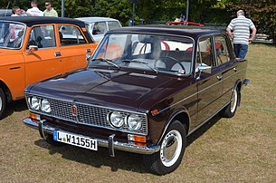
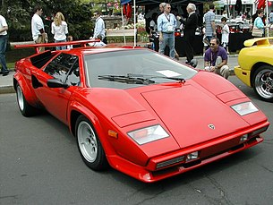
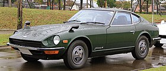
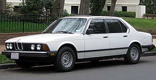
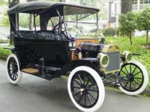

История авто Список автомобилей
   
Первый автомобиль с бензиновым двигателем внутреннего сгорания (ДВС) был создан 1885 году Карлом Бенцом. Это был трёхколёсный двухместный экипаж на высоких колёсах со спицами.
Годом позже (1886) появился вариант Готлиба Даймлера, который считается первым в мире автомобилем, получившим практическое применение. Однако австрийцы полагают, что отцом-основателем автомобилестроения является соотечественник Бенца и Даймлера Зигфрид Маркус, который начал разрабатывать свой вариант бензинового автомобиля в 1875 году.
Первый автомобиль Бенца, оснащялся четырехтактным бензиновым мотором с водяным охлаждением мощностью 0,9 л.с. Цилиндр располагался горизонтально над осью огромных задних колес и приводил их в движение через одну ременную и две цепные передачи. Большой, горизонтально расположенный маховик находился под двигателем. Он соединялся с коленвалом конической передачей и использовался для создания равномерного вращения и для запуска мотора. Электрическое зажигание питалось от гальванической батареи — это было более совершенное решение, чем калильные трубки Готлиба Даймлера, работавшего параллельно и независимо от Бенца (фирмы объединилась только в 1926 году, образовав компанию «Даймлер-Бенц АГ»). В отличие от деревянной тележки Даймлера автомобиль Бенца имел раму, спаянную из металлических трубок. Машина развивала смехотворную по нашим меркам скорость — 16 км/ч, но по тем временам это была весьма прогрессивная конструкция.
Несмотря на то, что создателем первого в мире автомобиля официально признан немецкий изобретатель Карл Бенц и его Motorwagen, «отцом автомобиля» называют Генри Форда, хотя в США первый автомобиль был построен на 7 лет позже.
Действительно, Генри Форд не был первым, кто придумал такое выдающееся инженерно-техническое устройство как автомобиль. Однако он сделал намного больше остальных в популяризации этого транспортного средства. Поставив в 1913 г. выпуск автомобилей на конвейер, он превратил автомобиль из игрушки для богатых в массовый продукт для всех, в общедоступное транспортное средство, предмет всеобщего обожания.
В 1903 г. Генри Форд основал «Форд Мотор Компани» по производству автомобилей. В 1908 г. он выпускает на американский рынок «Модель Т». В последующие годы автомобиль выигрывает несколько гонок и устанавливает новые рекорды скорости. «Модель Т» приобретает известность и хорошо продается. В 1913 г. Форд впервые запускает производственную линию в своих производственных цехах. Г.Форд не является изобретателем сборочной линии, до него тоже пользовались этим принципом. Тем не менее, он первым применил его последовательность на производстве.
Форд Модель Т
Каждый работник совершает лишь несколько движений, что значительно ускоряет весь процесс производства. Сборка автомобилей на конвейере тут же дала положительные результаты: увеличился выпуск машин, соответственно, и прибыль компании. В 1914 г. было получено 30 миллионов долларов прибыли, в 1916 г. — 60 миллионов. С увеличением объемов по выпуску автомобилей, Форд снижает на них цены. В 1908 году «Модель Т» стоит 850 долларов. После введения сборочной линии цена упадет до $ 300. По этой цене ее могут купить даже рабочие, которые строят «Модель Т». Форд резюмирует свою концепцию: автомобиль должен быть массовым продуктом, который каждый может себе позволить. В 1927 году компания продала 15 миллионов автомобилей. Превзойти этот производственный рекорд удалось лишь в 1972 году немецкому автомобилю Volkswagen Beetle. В первой половине 20-го века Генри Форд сумел изменить жизнь многих людей, создав надежный автомобиль по разумной цене, доступный для каждого.